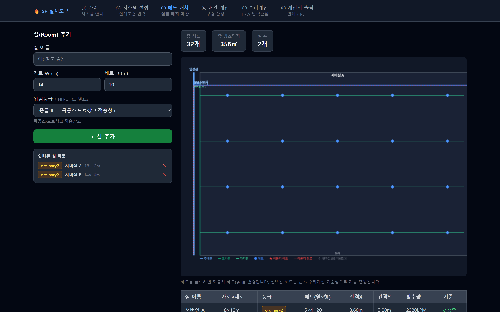
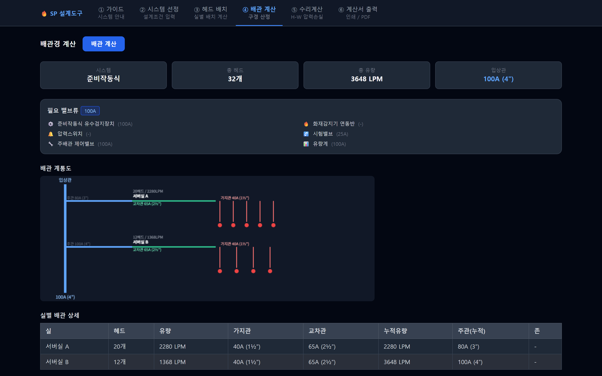

스프링클러 설계 가이드
습식·건식·준비작동식·일제살수식의 선정 기준부터 위험등급별 헤드 배치, 배관경 선정표까지. 설계에 필요한 조문이 정리된 한 화면.
설계에 쓰는 조문만 골라, 쓰기 좋은 형태로 정리했습니다.
무엇이 대체되나
② 시스템 선정
용도 · 천장 온도 · 수손 민감도 · 화재 특성을 고르면 습식 · 건식 · 준비작동식 중 어느 방식이 맞는지 근거 조문과 함께 나옵니다. 선정된 방식에 필요한 밸브류(유수검지장치 · 감지기 연동반 · 시험밸브 등)가 구경까지 붙어서 정리됩니다.
🔍 클릭하면 크게 볼 수 있습니다
용도 구분
14종
사무소 · 병원 · 데이터센터 · 랙식창고 등
판단 근거
조문 표시
NFPC 103 제4·6·7·10조
③ 헤드 배치
가로 · 세로와 위험등급을 넣으면 헤드가 배치되고 주배관 · 교차관 · 가지관까지 계통이 함께 그려집니다. 실별 헤드 수, 간격 X/Y, 방수량이 표로 정리되고 기준 충족 여부가 표시됩니다. 배치도에서 헤드를 클릭하면 최불리 헤드가 바뀝니다.

🔍 클릭하면 크게 볼 수 있습니다
헤드 간격
등급별 자동
NFPC 103 별표2 기준
실 여러 개
동시 관리
총 헤드 수·방호면적 합산
④ 배관 계산
가지관 · 교차관 · 입상관 구경이 헤드 수에 따라 산정됩니다. 별표1을 다시 펼칠 일이 없습니다. 구간별 유량과 함께 정리되어 그대로 계산서에 들어갑니다.

🔍 클릭하면 크게 볼 수 있습니다
⑤ 수리계산
배치도에서 고른 최불리 헤드가 그대로 기준점이 됩니다. 관 재질(강관 C=120 · 동관/스테인리스 C=150)과 구간별 직관 길이 · 부속류를 넣으면 하젠-윌리엄스 식으로 압력손실이 계산됩니다. 설계유량은 동시개방 기준개수에서 자동으로 잡힙니다.
🔍 클릭하면 크게 볼 수 있습니다
설계유량
자동 산정
기준개수 × 헤드 방수량
부속 등가장
구간별 입력
엘보 · 티 · OS&Y · 알람 · 체크
작동 모습
연출된 시연 장면입니다. 기준 전체를 보려면 무료로 바로 쓰기.